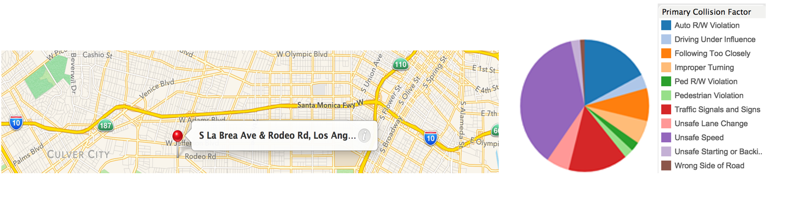
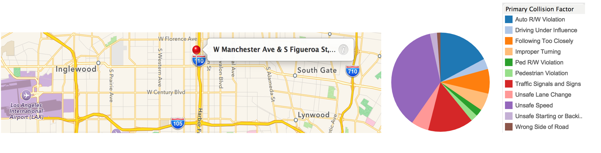
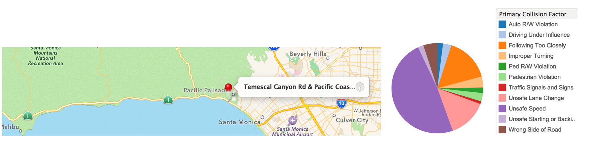
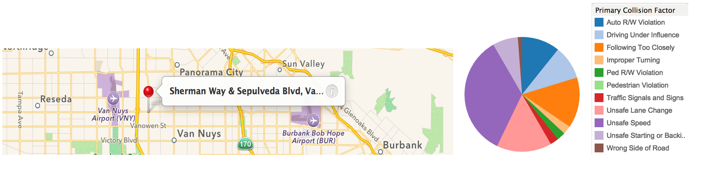
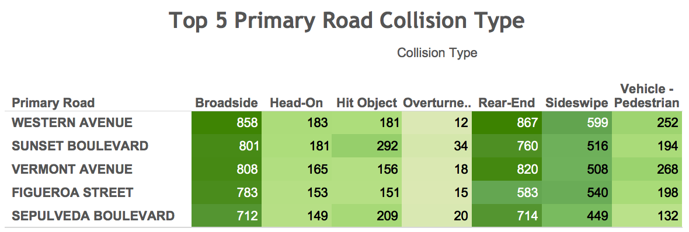
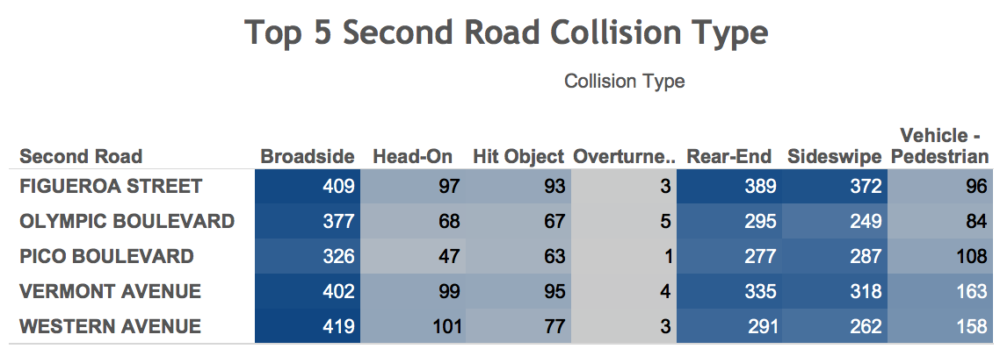

High Risk Location
High Risk Intersections
In order to conduct more detailed investigation on very high risk intersections, we made the intersection frequency analysis table based on the original data from the location table. This table is calculated by the primary road and secondary road matches and identifies only the across road frequency greater than 70 from 2008 to 2013.
The top three intersections with the highest frequency of collision are La Brea Avenue & Rodeo Road, Manchester Avenue & Figueroa Street(N), Pacific Coast Highway & Temescal Canyon Road and Sherman Way & Sepulveda Blvd.

Top 4 High Risk Intersections Analysis
La Brea Avenue & Rodeo Road
Below is the google map location pin for the intersection with La Brea Ave & Rodeo Road. This intersection is next to Culver City area and located in the intersection of busy commercial area. The pie chart describes that a large portion of the 105 collisions is caused by Auto R/W Violation and unsafe speed.

Manchester Avenue & Figueroa Street(N)
The intersection of Manchester Ave and Figueroa Street (N) had 95 collision records from the whole database. It is only two blocks from the busy I-110 Highway and locate in an extremely busy commercial areas. The primary collision factors are unsafe speed,Auto R/W Violation, Traffic Signals and Signs and following too closely. In order to improve the traffic situation, we should place the speed calculator beside the road to remind drivers slow down at this area and we could also put up signs like “Caution: high traffic area”.

Pacific Coast Highway & Temescal Canyon Road
This intersection is located near Santa Monica beach area and on the California 1 highway. Most of the collision happened because of unsafe speed and unsafe lane change. This is one of the most high risk intersections in Santa Monica and it is on the way to beach area. The car speed at this areas are very high. It will be helpful if LAPD can place traffic lights to limit high speed.

Sherman Way & Sepulveda Blvd
The intersection of Sherman Way & Sepulveda Blvd is located at Van Nuys. It has a very similar situation with the intersection of Manchester ave & Figueroa Street(N). It is mainly because of unsafe speed and unsafe lane change. This intersection is right off highway 405.

High Risk Road Analysis
Besides looking at the high risk intersections, we explored a deep analysis upon high risk road instead. According to the frequency analysis, the top five primary roads that have the highest frequency of collision are WESTERN AVE, SUNSET BLVD, VERMONT AVE, FIGUEROA ST, and SEPULVEDA BLVD. The top five second roads are FIGUEROA ST, OLYMPIC BLVD, PICO BLVD, VERMONT AVE, and WESTERN AVE. We then did the following frequency analysis tables based on collision type, collision day of week, and collision factor.
Top Five Primary Road Analysis

Collision Type: Broadside, Rear-end, and Sideswipe accounts for the most traffic collisions.
Collision Day of Week: Friday and Saturday are the riskiest days for Western Ave and Sunset Blvd;
Tuesday and Friday are the riskiest days for Vermont Ave, Figueroa St and Sepulveda Blvd.
Collision Factor: Majority of the collisions happened on these 5 roads are due to unsafe speed and auto R/W violations.
Top Five Second Road Analysis

Collision Type: Broadside, Rear-end, and Sideswipe are the top 3 type of collision
Collision Day of Week: Friday and Saturday are the riskiest days for Figueroa St, Pico Blvd and western avenue; Friday is the riskiest day for Vermont Ave; Wednesday to Friday are the riskiest days for Olympic Blvd.
Collision Factor: Majority of the collisions happened on these 5 roads are due to unsafe speed and auto R/W violations.